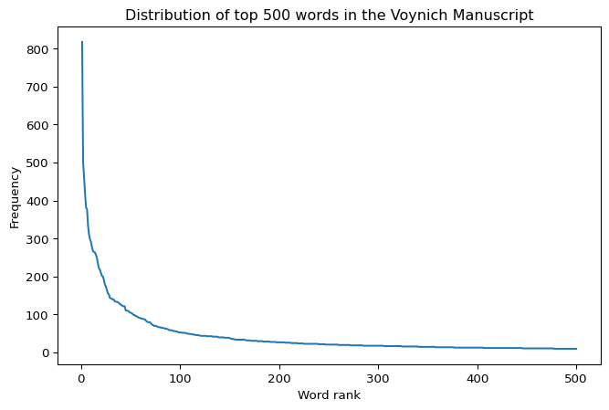
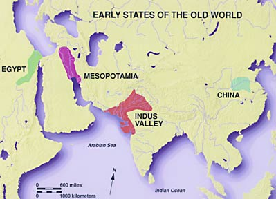
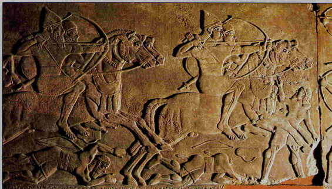
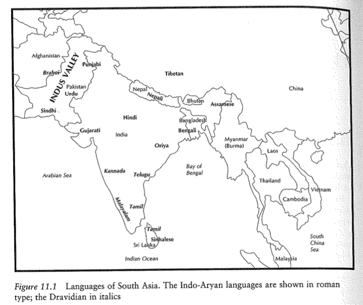
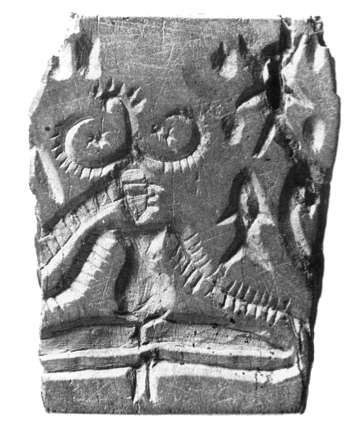

Total tokens: 33131
Unique types: 6876Decipherment
Day 23: Finishing up Voynich; Indus Valley Script & Rongorongo
Dr. Andrew M. Byrd
Review
Last Time
- Where, When, Who?
- Etruscan
- Voynich
Voynich Manuscript
daiin ol chedy qokedy qokeey dal
chol chol daiin chey qokain ol
chedy qokeedy shedy qokedy daiin
ol daiin chol chedy qokedy qokeey
qokeedy chedy ol daiin aiin chol
shedy qokain qokeedy chey daiin
daiin chedy ol chol qokedy chey
qokain chedy shedy ol daiin
ol chedy qokedy qokeey daiin chol
shedy qokeedy chey ol aiin daiin
qokain chedy ol daiin chol chey
daiin qokedy chedy shedy ol
The Voynich Manuscript: Crunching Some Numbers
Crunching Some Numbers
- Full manuscript (transcribed) found at Chirila’s Github:
- Analyzing this file locally:
Crunching Some Numbers
- Analyzing the distribution of the top 500 words
- What does this graph tell you?

Zipf’s Distribution
- Shows that the Voynich manuscript is not random!
- Random strings do not typically produce this kind of orderly frequency distribution.
- This is the type of distribution one expects in natural language.
Zipf’s Distribution
- At the same time, a Zipfian distribution does not by itself prove that the manuscript encodes language.
- Other structured systems can also generate similar curves (income distribution, website hits, city populations, etc.)
- What this result demonstrates is that the Voynich text is highly organized, but it does not yet tell us what kind of system lies behind that organization.
Crunching Some Numbers
- Analyzing three-letter sequences (trigrams) at word’s edge
Top prefixes:
[('qok', 2936), ('che', 2443), ('she', 1637), ('cho', 1458), ('dai', 1229), ('qot', 1074), ('oke', 761), ('oka', 709), ('ota', 631), ('sho', 602)]
Top suffixes:
[('iin', 3878), ('edy', 3843), ('eey', 1669), ('ain', 1473), ('hey', 1437), ('hol', 944), ('ody', 904), ('eol', 767), ('chy', 704), ('hor', 665)]
------------------------------------------------------------------
Prefix diversity: 637
Suffix diversity: 547Prefixes and Suffixes
The most common three-letter prefixes and suffixes reveal strong regularities in word formation.
- High-frequency prefixes:
qok-,che-,she- - High-frequency suffixes:
-iin,-edy
- High-frequency prefixes:
Prefixes and Suffixes
- Suggests that Voynich words are not arbitrary strings of characters.
- Instead, they appear to be built from recurring subword units, much like prefixes and suffixes in known languages.
- In particular, the concentration of recurring endings suggests that much of the variation in Voynich words may be carried at the end of the word.
Crunching Some Numbers
There are quite a few “families” of words, beginning with similar types of sequences
Many words share the same first three letters but differ in their endings.
yka ['ykalokain', 'ykail', 'ykaky', 'yka', 'ykal', 'ykam', 'ykaiin', 'ykanam', 'ykaro', 'ykaiir']
sho ['shopolchedy', 'shodshey', 'shorkchy', 'shoeey', 'sholkair', 'shokal', 'shotaiin', 'shokog', 'shoteeody', 'shodan']
cth ['ctheody', 'cthedy', 'cthdeecthy', 'cthodd', 'cthoshol', 'cthd', 'cthaichar', 'ctheety', 'cther', 'ctheockhosho']
kor ['kor', 'korain', 'korchy', 'koraiin', 'kory', 'korare', 'koroiin', 'korary', 'korols', 'korol']
sor ['sor', 'sorary', 'soral', 'sorols', 'sory', 'sorshy', 'soraloaly', 'soraiin', 'sorol', 'sorcheey']
ckh ['ckhor', 'ckheeey', 'ckheckhy', 'ckhos', 'ckhey', 'ckhcfhhy', 'ckheos', 'ckhedy', 'ckholy', 'ckheokey']
kai ['kair', 'kaiim', 'kain', 'kaiishdy', 'kail', 'kaiiin', 'kaithy', 'kairam', 'kairy', 'kaiin']
cht ['chtchol', 'chtedytar', 'chtaldy', 'chtaem', 'chtoithy', 'chtaiin', 'chtaiir', 'chtod', 'chtol', 'chtchor']
sha ['shalky', 'shan', 'shain', 'shair', 'shalkl', 'shaly', 'sham', 'shaikhhy', 'shaikhy', 'shalom']
she ['sheeey', 'shedshey', 'sheetey', 'sheom', 'sheolol', 'sheeol', 'sheshy', 'shedas', 'shetcheodchs', 'shefchdy']
dar ['darchor', 'darair', 'darom', 'dario', 'darolm', 'dardyr', 'darala', 'daraly', 'daraiin', 'darory']
ote ['otees', 'oteodal', 'oteees', 'oteodair', 'otedaiin', 'oteoefol', 'oteeol', 'oteeosy', 'oteor', 'ote']
rol ['rolchey', 'rolsheedy', 'roly', 'rolchy', 'rolchedy', 'roloty', 'rolkeedy', 'rol', 'rolkeey', 'rolshey']
dai ['daiildy', 'daid', 'dainl', 'daiiy', 'daiidal', 'dail', 'dairodg', 'daikam', 'daisoldy', 'daiirol']
ota ['otam', 'otalair', 'otarain', 'otaily', 'otaiir', 'otairor', 'otardam', 'otalom', 'otal', 'otaram']
oka ['okain', 'okalody', 'okaeechey', 'okar', 'okachey', 'okardy', 'okad', 'okaim', 'okaifhy', 'okalol']
che ['cheeorfor', 'chepchedy', 'cheorol', 'cheedar', 'cheokor', 'chepcheol', 'chefchdy', 'cheeckhody', 'chechol', 'cheocthedy']
cph ['cphhy', 'cphom', 'cphor', 'cphary', 'cpholkaiin', 'cphdaithy', 'cphedom', 'cphodales', 'cphealy', 'cphydy']
cfh ['cfhol', 'cfheol', 'cfhar', 'cfheo', 'cfhoy', 'cfhdy', 'cfheey', 'cfheody', 'cfhyaiin', 'cfhodoral']
oda ['odan', 'odain', 'odaiin', 'odaiil', 'odar', 'odaiiily', 'odalaly', 'odalar', 'odaiir', 'odal']
ysh ['ysholshy', 'yshesy', 'ysheees', 'ysheos', 'ysheody', 'yshey', 'yshos', 'ysheeo', 'yshchey', 'yshor']
okc ['okchodshy', 'okchody', 'okchy', 'okcheod', 'okchedam', 'okcheor', 'okchey', 'okchain', 'okchod', 'okchar']
otc ['otcheolom', 'otchm', 'otchor', 'otchedar', 'otchdy', 'otchom', 'otchordy', 'otchody', 'otchaiin', 'otchdal']
cho ['chockhdy', 'cholkar', 'chosar', 'chop', 'choky', 'chokeeo', 'choshy', 'chorchor', 'chodol', 'choraiin']
yda ['ydarchom', 'ydaiin', 'ydaral', 'ydam', 'ydals', 'ydairol', 'ydain', 'ydas', 'ydal', 'ydar']
yta ['ytaly', 'ytal', 'ytasal', 'ytaiim', 'ytaiir', 'ytaipom', 'ytashy', 'ytalody', 'ytaiin', 'ytar']
oks ['okshchedy', 'okshdy', 'oksheo', 'okshey', 'okshy', 'okshol', 'okshody', 'oksho', 'okshes', 'okshed']
ksh ['kshey', 'kshoy', 'ksh', 'kshes', 'kshotol', 'ksheo', 'kshdy', 'kshor', 'kshd', 'ksholochey']
kod ['kodain', 'kodshol', 'kodalchy', 'kodaiin', 'kodl', 'kod', 'kodam', 'koddy', 'kodal', 'kodshey']
old ['oldaim', 'old', 'oldain', 'oldaiin', 'oldam', 'oldal', 'oldor', 'oldckhy', 'oldeey', 'oldy']
oii ['oiiiny', 'oiiiin', 'oiiin', 'oiir', 'oiin', 'oiinal', 'oiinol']
chd ['chdal', 'chddy', 'chdoly', 'chdarol', 'chdy', 'chdalchdy', 'chdchy', 'chdalor', 'chdalkair', 'chdody']
shc ['shckhol', 'shcthey', 'shckheol', 'shckhdy', 'shckhhd', 'shckhey', 'shckhody', 'shcphy', 'shcty', 'shcthy']
kol ['koldal', 'kolkar', 'kolches', 'kolchey', 'kolcheey', 'kolchdy', 'kolshd', 'kolky', 'koldaky', 'kolsho']
cha ['chadaiin', 'chalr', 'chaim', 'chaiind', 'chalal', 'char', 'chariin', 'chalkeey', 'charam', 'chakod']
kch ['kchey', 'kchs', 'kchetam', 'kchochaiin', 'kchoy', 'kchorl', 'kchdal', 'kchoar', 'kchod', 'kcheedchdy']
dor ['doroiin', 'dorg', 'dor', 'dorar', 'doror', 'dorl', 'dorean', 'dorody', 'dory', 'doral']
ych ['ychar', 'ycheeodain', 'ychey', 'ycham', 'ychear', 'ychckhy', 'ycheo', 'ycheeoy', 'ycheool', 'ycheom']
tch ['tchddy', 'tchkaiin', 'tchey', 'tchty', 'tchoarorshy', 'tchodar', 'tcheod', 'tchedydy', 'tchedy', 'tchotchol']
psh ['pshodalos', 'pshod', 'pshol', 'psheedy', 'pshdar', 'pshdal', 'pshar', 'pshedaiin', 'psheot', 'pshdy']
dyd ['dydydy', 'dydain', 'dydaim', 'dydyd', 'dydy', 'dydchy']
yto ['ytoiin', 'ytos', 'ytom', 'ytol', 'ytoda', 'ytolkal', 'ytolaiir', 'ytorory', 'yto', 'ytody']
das ['dasaiin', 'dasady', 'das', 'dasam', 'dasar', 'dasain', 'dasy']
dch ['dchdar', 'dchchy', 'dcheey', 'dchyky', 'dched', 'dcho', 'dchm', 'dcheedy', 'dchsy', 'dcheeey']
rch ['rchs', 'rchody', 'rch', 'rched', 'rcheodal', 'rchees', 'rchar', 'rchchy', 'rcheey', 'rcho']
tsh ['tshes', 'tshy', 'tshodair', 'tshoar', 'tshol', 'tsheodl', 'tshey', 'tshdol', 'tshod', 'tshed']
chy ['chykeor', 'chykchy', 'chykeedy', 'chykald', 'chydy', 'chypchey', 'chypaldy', 'chypchy', 'chykaiin', 'chypcham']
doi ['doiros', 'doiir', 'doiiram', 'doiin', 'doiiin', 'doin', 'doikhy']
oko ['okolor', 'okoeey', 'okols', 'okolchey', 'okoaiin', 'okorory', 'okod', 'okorair', 'okor', 'okokom']
dal ['dalal', 'daly', 'daldaiin', 'dalaiin', 'dalydal', 'dalorain', 'dalchckhy', 'dalom', 'dalchy', 'dalshy']
eeo ['eeol', 'eeodaiin', 'eeoseeos', 'eeo', 'eeor', 'eeos']
kee ['keeey', 'keeeos', 'keeed', 'keeokechy', 'keechey', 'keedeedy', 'keeody', 'keedal', 'keeedal', 'keed']
olt ['oltedy', 'oltshsey', 'oltain', 'olteedy', 'oltam', 'oltchey', 'olteody', 'olty', 'oltchedy', 'olteeedy']
yte ['yteedy', 'yteedar', 'ytedykor', 'yteched', 'yteodaiin', 'yteeoldy', 'yteokar', 'yteeodal', 'ytecheol', 'yteeedy']
och ['ochar', 'ocholy', 'ochoiky', 'ochaly', 'ochaiin', 'ochedar', 'ochy', 'ochepchody', 'ochkchar', 'ocheodaiin']
shy ['shytchy', 'shypchedy', 'shydal', 'shyshol', 'shysho', 'shy', 'shykaiin', 'shykeody']
dol ['dolo', 'dolshed', 'doly', 'doledy', 'dolkchy', 'doldaiin', 'dolchl', 'doleeey', 'dolchsyckheol', 'doldy']
soc ['socthey', 'socthh', 'socthody', 'sockhey', 'sochey', 'sockhody']
tod ['todky', 'todal', 'todaly', 'todor', 'tod', 'tody', 'todar', 'todalain', 'todaiin', 'todydy']
oto ['oto', 'otolol', 'otory', 'otom', 'otorchy', 'otoloaiin', 'otoaiin', 'otolom', 'otos', 'otolosheey']
lol ['lolsaiiin', 'lolom', 'lolain', 'loly', 'lols', 'lolkeol', 'lolkaiin', 'lol', 'loldy', 'lolchor']
yko ['ykoaiin', 'ykody', 'ykofar', 'ykoloin', 'ykolor', 'ykor', 'ykoldy', 'ykory', 'ykoiin', 'ykolody']
lch ['lchedam', 'lchcphedy', 'lcheo', 'lchey', 'lchdal', 'lchealaiin', 'lchs', 'lcheedy', 'lcheal', 'lcheey']
kec ['kechodshey', 'kechy', 'kecheokeo', 'kechey', 'kechedy', 'kechdy']
sch ['schedy', 'schy', 'scheer', 'schos', 'scheeol', 'schodchy', 'scheaiin', 'schody', 'schocthhy', 'schedair']
pol ['polkeey', 'polkeeo', 'polshor', 'polanar', 'polor', 'polshy', 'polkeedal', 'polar', 'polshdal', 'poldshedy']
ypc ['ypcholy', 'ypchy', 'ypchseds', 'ypcheeey', 'ypchal', 'ypchol', 'ypchdy', 'ypchdar', 'ypchar', 'ypcheddy']
chk ['chky', 'chkeey', 'chkchy', 'chkal', 'chkaly', 'chkol', 'chkear', 'chkoy', 'chka', 'chkoldy']
qot ['qotchedy', 'qotchs', 'qotchor', 'qoteedar', 'qotshol', 'qotcheedy', 'qoteosam', 'qoty', 'qoteeedy', 'qotshy']
ytc ['ytchol', 'ytchy', 'ytchoky', 'ytchdy', 'ytched', 'ytchchy', 'ytchyd', 'ytchos', 'ytcheeky', 'ytcheear']
sai ['saiidy', 'sairor', 'sair', 'saithy', 'sai', 'saiindy', 'sain', 'saim', 'sairal', 'sairol']
yks ['ykshy', 'yksh', 'yksheey', 'ykshol', 'yksheol', 'yksho']
ols ['olshly', 'olsheod', 'olsheol', 'olsheeosol', 'olshty', 'olshey', 'olsy', 'olshed', 'olsaly', 'olshalsy']
qok ['qokdy', 'qokoiiin', 'qokeeshy', 'qokaiinos', 'qokhy', 'qokchos', 'qokeeen', 'qokcheey', 'qokoin', 'qokaiii']
keo ['keoy', 'keoar', 'keodam', 'keoly', 'keo', 'keor', 'keody', 'keodaiin', 'keodar', 'keodky']
sal ['salched', 'sals', 'sal', 'salal', 'salkeedy', 'saly', 'salshcthdy', 'saldaiin', 'salo', 'saldal']
yke ['ykeedy', 'ykecsey', 'ykeodain', 'ykeealkey', 'ykeedar', 'ykedaiin', 'ykeols', 'ykeeshedy', 'ykeeeody', 'ykey']
chc ['chckham', 'chcphol', 'chcheky', 'chchdy', 'chcpaiin', 'chckhal', 'chckheody', 'chckhaly', 'chcphedy', 'chcpham']
pch ['pcheodchy', 'pcheor', 'pchd', 'pcheam', 'pchedchdy', 'pcheodaiin', 'pcho', 'pcheodain', 'pchedairs', 'pchsed']
sht ['shtal', 'shtor', 'shtaiin', 'shty', 'shteody', 'shtar', 'shtchy', 'shtey', 'shtol', 'shtshy']
lsh ['lshckhy', 'lshed', 'lshor', 'lshey', 'lsheey', 'lsheo', 'lsheody', 'lshechy', 'lsheg', 'lsheckhedy']
qop ['qopshedy', 'qopchesy', 'qopches', 'qopchypcho', 'qopam', 'qopchedy', 'qopcheey', 'qopchody', 'qopary', 'qopchyr']
qoc ['qocheor', 'qocpheeckhy', 'qockhedy', 'qocho', 'qockhed', 'qockheor', 'qochedain', 'qocthedy', 'qockheedy', 'qocthsy']
qod ['qodar', 'qodcthy', 'qodain', 'qoda', 'qod', 'qodaiiin', 'qodal', 'qodaiikhy', 'qodeedy', 'qodor']
sol ['solchey', 'solshedy', 'solkeey', 'solain', 'solkain', 'soldy', 'solkeedy', 'solky', 'soloiin', 'sold']
qos ['qos', 'qosain', 'qoshedy', 'qoschodam', 'qoscheody', 'qosaiin', 'qoseey', 'qosheckhhy', 'qoshocphy', 'qoshy']
oct ['octhor', 'octhol', 'octhdy', 'octhal', 'octhd', 'octheody', 'octhey', 'octhede', 'octhos', 'octy']
oke ['okeeaiin', 'okedy', 'okeols', 'okees', 'okedyd', 'okeesodar', 'okecheey', 'okeor', 'okedal', 'okey']
olc ['olcheear', 'olchad', 'olcthr', 'olchdaiin', 'olchokal', 'olcheem', 'olcheedar', 'olcsedy', 'olcheeo', 'olch']
opo ['opom', 'oporody', 'opod', 'opolsy', 'opolkeor', 'oporaiin', 'opol', 'opolkod', 'opoly', 'opor']
soe ['soeom', 'soes', 'soefchocphy', 'soeeedy', 'soeees', 'soeeol']
opc ['opcheol', 'opchdy', 'opcheed', 'opchal', 'opchekaiin', 'opchepy', 'opch', 'opchedy', 'opchedal', 'opcholor']
qoe ['qoekeor', 'qoeeor', 'qoeear', 'qoeekeedy', 'qoeky', 'qoeechdy', 'qoekaly', 'qoekeey', 'qoeeda', 'qoedaiin']
aii ['aiildy', 'aiioly', 'aiisaim', 'aiidal', 'aiir', 'aiisod', 'aiis', 'aiim', 'aiichy', 'aiil']
see ['seear', 'seekey', 'seey', 'seedy', 'seeey', 'seees']
ykc ['ykchhdy', 'ykcholqod', 'ykchotchy', 'ykcheshd', 'ykchedy', 'ykch', 'ykcheor', 'ykcsedy', 'ykchey', 'ykcholy']
osh ['osho', 'oshol', 'oshdy', 'oshey', 'osheokaiin', 'oshor', 'osheeo', 'osheey', 'oshaiin', 'osheeky']
shk ['shkar', 'shkchy', 'shkey', 'shkchor', 'shkakeedy', 'shkain', 'shkshy', 'shky', 'shkeol', 'shko']
chp ['chpaiin', 'chpchol', 'chpcheod', 'chpeeeey', 'chpchy', 'chpal', 'chpchshdy', 'chpchey', 'chpchs', 'chpcheor']
tor ['torolshsdy', 'tor', 'torchy', 'tory', 'toror', 'torchey', 'torshor', 'torain']
ola ['olals', 'olald', 'olal', 'olaiin', 'olaiior', 'olair', 'olainy', 'olalor', 'olain', 'olaen']
qoo ['qoolkeedy', 'qoochey', 'qool', 'qoodain', 'qoochy', 'qooiiin', 'qoor', 'qooto', 'qooiin', 'qoolkeey']
fch ['fchokshy', 'fcheos', 'fchocthar', 'fcholdy', 'fchey', 'fchol', 'fcheeol', 'fcheey', 'fchy', 'fcheolain']
oai ['oaithy', 'oair', 'oairar', 'oaiin', 'oaiil', 'oain', 'oaiir']
qoa ['qoais', 'qoaiin', 'qoal', 'qoaikhy', 'qoar', 'qoair', 'qoain', 'qoaiir']
tai ['tain', 'taidy', 'taikhy', 'taipar', 'taiky', 'taiiin', 'tair', 'tairoor', 'taim', 'taiin']
kar ['karaim', 'karal', 'kar', 'kard', 'karody', 'kary', 'kara', 'karar', 'karainy', 'karchy']
poe ['poeokeey', 'poeear', 'poeeas', 'poedair', 'poeeaiin', 'poeeo']
tar ['tarair', 'taram', 'taror', 'tar', 'taraiin', 'tarol', 'taros', 'taral', 'tarairy', 'tarodaiin']
ska ['skaiin', 'skar', 'skain', 'ska', 'skaiiodar', 'skal']
sar ['sarols', 'saraiir', 'sarg', 'sarol', 'sarain', 'sary', 'saraisl', 'sarar', 'saral', 'saraiin']
oee ['oeeodain', 'oeedy', 'oeeaiin', 'oeeor', 'oeeady', 'oeey', 'oeeos', 'oeeeody', 'oeecthy', 'oeedaiin']
sos ['sossy', 'soshy', 'sosar', 'sosees', 'soshckhy', 'sos']
oty ['otyky', 'otyd', 'oty', 'otytam', 'otytchol', 'otykol', 'otydy', 'otyteeodain', 'otytchy', 'otykeey']
dsh ['dshodar', 'dshoy', 'dsholyd', 'dsheoy', 'dshedal', 'dshedy', 'dsheor', 'dsheeo', 'dshody', 'dsheos']
dee ['deedy', 'deeeod', 'deeo', 'deeocthey', 'deeol', 'deey', 'deeamshol', 'deees', 'deeedy', 'deeal']
ots ['otshes', 'otshy', 'otshor', 'otshedy', 'otshs', 'otshdy', 'otshealkar', 'otsho', 'otsheey', 'otshsaiin']
dyk ['dyky', 'dykaiin', 'dykeedain', 'dykey', 'dykshy', 'dykeor', 'dykaly', 'dykedy', 'dykeedy', 'dykain']
ofc ['ofchoshy', 'ofchory', 'ofchor', 'ofchy', 'ofchedaiin', 'ofcheds', 'ofchar', 'ofchain', 'ofcheefar', 'ofchol']
tee ['teedan', 'teeo', 'teed', 'teeody', 'teedam', 'teedy', 'teeys', 'teear', 'teeal', 'teedaram']
chs ['chshy', 'chseeor', 'chsdy', 'chsamoky', 'chsky', 'chsho', 'chsm', 'chshol', 'chshoty', 'chsea']
chl ['chlar', 'chlam', 'chly', 'chlaiiin', 'chls', 'chl', 'chlr', 'chldaiin', 'chlor', 'chllo']
opy ['opydaiin', 'opydy', 'opy', 'opydg', 'opykey', 'opyaiin']
orc ['orcheos', 'orchcthdy', 'orchaiin', 'orchedy', 'orchl', 'orchor', 'orcheol', 'orchsey', 'orcho', 'orcheo']
lok ['lokam', 'lokeey', 'lokeedy', 'lokaiin', 'lokar', 'lokain']
rai ['raiin', 'rair', 'raiis', 'rais', 'raify', 'rainal', 'raithty', 'rain', 'raikchy', 'raithy']
qof ['qofair', 'qofcheol', 'qoforom', 'qof', 'qofchal', 'qofshdy', 'qofydaiin', 'qofchdaiin', 'qofcheepy', 'qofod']
tol ['tolm', 'tolkal', 'tolchdaiin', 'tolair', 'tolor', 'tolshy', 'tolpchy', 'toldy', 'toleeshal', 'tolkchdy']
oqo ['oqol', 'oqokeey', 'oqoeeosain', 'oqo', 'oqotar', 'oqockhy', 'oqokain', 'oqoky', 'oqoor', 'oqotaiin']
rod ['rodaiin', 'rodain', 'rod', 'rodam', 'rodeedy', 'rody']
pai ['paiin', 'paiir', 'pairody', 'pair', 'paiinody', 'pairar', 'paichy']
sot ['sotchy', 'sotoiiin', 'soty', 'soteol', 'sotchdaiin', 'sotchdy', 'sotaiin', 'sotey', 'sotodan', 'sotchaiin']
fol ['foldaiin', 'fol', 'fold', 'folchol', 'folaiin', 'folchor', 'folchear', 'folorarom', 'folchey', 'folor']
tal ['taly', 'talody', 'talkl', 'talchos', 'talar', 'tal', 'talshdy', 'taldain', 'taldar', 'talol']
olo ['olody', 'oloeedy', 'oloky', 'olohy', 'olol', 'oloraiin', 'olotchedy', 'oloiram', 'oloiir', 'oloro']
ock ['ockhy', 'ockhoees', 'ockhhy', 'ockh', 'ockhedy', 'ockhey', 'ockhody', 'ockhol', 'ockhdor', 'ockhor']
sod ['sodal', 'sodaiin', 'sodar', 'sod', 'sodair', 'sodaiiin', 'sody']
teo ['teols', 'teodkaiin', 'teody', 'teodar', 'teolkedain', 'teoiin', 'teolshy', 'teodeear', 'teodaiin', 'teo']
dyt ['dytchor', 'dytain', 'dytal', 'dytary', 'dytchy', 'dyty', 'dyteey', 'dytydy', 'dytshedy', 'dytey']
por ['porar', 'poror', 'porair', 'porarchy', 'porol', 'pororaiin', 'porechol', 'porchey', 'porory', 'por']
ors ['orsheckhy', 'orsheedy', 'orsheeen', 'orsheoldy', 'orshos', 'orshy', 'ors']
oro ['oroiiin', 'orokeeeey', 'orolkain', 'orockhey', 'oroly', 'orol', 'orolodain', 'orom', 'oror', 'orodam']
poc ['pochaiin', 'pocheody', 'pochedy', 'pocharal', 'pochey', 'pochor']
otl ['otl', 'otlaiin', 'otly', 'otleey', 'otlchdain', 'otlol']
sok ['sokedy', 'sokod', 'sokaiin', 'sokeey', 'sokchor', 'sokeedy', 'sokchol', 'sokol', 'sokcheey', 'sokar']
fsh ['fsholom', 'fshor', 'fshodchy', 'fshdar', 'fshedy', 'fshody', 'fsheda']
qor ['qorchedy', 'qorshy', 'qorchain', 'qorar', 'qor', 'qorain', 'qoraiin']
oek ['oekeey', 'oekeody', 'oekeedy', 'oekar', 'oeksa', 'oeky', 'oekshy', 'oekor', 'oekaiin', 'oekey']
eee ['eeesaiin', 'eeesal', 'eeeey', 'eeey', 'eeedeed', 'eeeodaiin', 'eeeos', 'eeeody', 'eeedy', 'eees']
qol ['qolkeedy', 'qolcheey', 'qolkeey', 'qolol', 'qoleechedy', 'qolkshey', 'qolteedy', 'qolkedy', 'qolchedy', 'qolkey']
shd ['shdchy', 'shdpchy', 'shdam', 'shdalo', 'shdydy', 'shdair', 'shdol', 'shdar', 'shdo', 'shdytody']
ocp ['ocpheo', 'ocphedy', 'ocphal', 'ocpheody', 'ocphoraiin', 'ocphy', 'ocphey']
ora ['oraly', 'oralar', 'oracphy', 'oraiino', 'oraiiin', 'oranol', 'orarol', 'oraro', 'oraloly', 'oraroekeol']
yfc ['yfcheky', 'yfchdy', 'yfchor', 'yfchey', 'yfchy', 'yfchedy']
olf ['olfaiin', 'olfchor', 'olfcham', 'olfchey', 'olfchedy', 'olfy', 'olfar']
lda ['ldaly', 'ldain', 'ldaiin', 'ldals', 'ldaiiin', 'ldar']
pod ['podair', 'podeesho', 'podshedy', 'podairol', 'podar', 'podchey', 'podaroar', 'podaiin', 'podkor', 'podaiir']
qek ['qekal', 'qekedy', 'qekchdy', 'qekar', 'qekeochor', 'qekor', 'qekeey', 'qekeoldy', 'qekeeey', 'qekchy']
ssh ['sshol', 'ssheey', 'ssheo', 'sshedy', 'sshey', 'sshor', 'ssheedal', 'ssheol', 'ssheckhy', 'ssheodain']
ops ['opshes', 'opshody', 'opsho', 'opshed', 'opshedy', 'opsholal', 'opsheolaiin', 'opshedal', 'opshol']
toc ['tochol', 'tocphol', 'tochey', 'tochon', 'tocthy', 'tocthey', 'tochsy', 'tockhy', 'tochso', 'tocheo']
ald ['aldy', 'aldalosam', 'ald', 'aldam', 'aldydy', 'aldaiin', 'aldar']
opa ['opar', 'opailo', 'opakam', 'opalkar', 'opaldy', 'opalchdy', 'opaiim', 'oparam', 'opalke', 'opaly']
shs ['shsdy', 'shshes', 'shshdar', 'shs', 'shsy', 'shso', 'shsopam', 'shshy']
ara ['aralos', 'arakaiin', 'aram', 'arals', 'arain', 'araram', 'aralary', 'arairaly', 'aral', 'arald']
als ['alshedy', 'alshey', 'alshdr', 'als', 'alsy', 'alshees']
lke ['lkedal', 'lkeeal', 'lkeeoar', 'lkeede', 'lkeeos', 'lkeedor', 'lkedey', 'lkeeshedy', 'lkechedy', 'lkeeedam']
ala ['alalor', 'alaldy', 'alain', 'alair', 'alaiiin', 'alar', 'alam', 'alaiin', 'alal']
lfc ['lfchal', 'lfchedy', 'lfchdy', 'lfcheol', 'lfchy', 'lfcheedy']
olk ['olkeeey', 'olkeeycthy', 'olkeal', 'olkais', 'olkeol', 'olkeeo', 'olkshdy', 'olkeeyr', 'olkaiir', 'olkeeodal']
air ['airal', 'airols', 'airy', 'airody', 'air', 'airod', 'airoy', 'airorlchy', 'airaldy', 'airam']
kal ['kalchdy', 'kaldaiin', 'kaldaim', 'kal', 'kalchedy', 'kalos', 'kalshey', 'kaldy', 'kalkal', 'kaly']
ked ['kedair', 'kedaleey', 'kedar', 'kedal', 'kedaiiin', 'kedarxy', 'kedydy', 'ked', 'kedy']
ted ['tedaiin', 'tedy', 'tedyol', 'tedcheo', 'tedam', 'tedar', 'tedain', 'tedal', 'ted', 'tedair']
par ['paroiin', 'parody', 'pardy', 'par', 'parchdy', 'paradam', 'parair']
yok ['yokor', 'yokeeol', 'yokalod', 'yokal', 'yokeey', 'yokeody', 'yoky']
pda ['pdar', 'pdan', 'pdal', 'pdair', 'pdalshor', 'pdaiin']
aro ['arody', 'arol', 'aroiin', 'arolor', 'aror', 'arodly', 'aro', 'arorochees', 'arorsheey', 'arodl']
kes ['keshey', 'keshdy', 'keshed', 'keshor', 'kesd', 'kesoar']
ole ['olekar', 'oleesey', 'oleeckhey', 'oleees', 'oleeedy', 'oleedy', 'oleed', 'oleeam', 'oleedar', 'oleeol']
ofa ['ofaramoty', 'ofaror', 'ofar', 'ofal', 'ofadain', 'ofaiin', 'ofaiino', 'ofaral', 'ofaiis']
pos ['posairy', 'possheody', 'poshol', 'posheor', 'posheos', 'posalshy', 'poshody']
ode ['odeeey', 'odeey', 'odeeeey', 'odeeed', 'odeedy', 'odeeeeodl', 'odeor', 'odey', 'odeedaiin', 'odeaiin']
rar ['raral', 'raroshy', 'rary', 'raraiiin', 'rar', 'raram', 'rarolchl', 'raraiin']
alo ['alolshedy', 'aloal', 'aloiin', 'alos', 'alod', 'aloees', 'alody', 'alory', 'alodar', 'alosheey']
alk ['alkam', 'alkchdy', 'alkaiin', 'alkal', 'alkeeol', 'alkol', 'alkeear', 'alkeey', 'alkedy', 'alkain']
alc ['alchky', 'alchy', 'alcfhy', 'alchdy', 'alchor', 'alched', 'alchey', 'alchedy', 'alchedar', 'alches']
qck ['qckhear', 'qckham', 'qckhy', 'qckhsy', 'qckhhy', 'qckhedy', 'qckheol']
cse ['csedly', 'cseckhdy', 'csees', 'cseeky', 'cseey', 'csedy', 'cseedy', 'cseam', 'cseol', 'cseeod']
poa ['poaly', 'poalshsal', 'poaiin', 'poalosy', 'poaral', 'poar']
qet ['qetam', 'qety', 'qetdain', 'qetal', 'qetedy', 'qetchdy', 'qetchar', 'qetaiin', 'qetain']
lta ['ltary', 'ltalor', 'ltaiin', 'ltam', 'ltal', 'ltain']
lka ['lkaldy', 'lkal', 'lkain', 'lkaiin', 'lkarshar', 'lkam', 'lkaiir', 'lkamo', 'lkalol', 'lkair']
lte ['lteey', 'lteam', 'ltedy', 'lteeal', 'lteody', 'lteedy']
rsh ['rsheal', 'rsheol', 'rshdy', 'rsheodor', 'rshedy', 'rshey', 'rsheedy', 'rshed', 'rsheedar']
ral ['ral', 'ralchy', 'ralchl', 'ralky', 'raly', 'ralom', 'ralchs', 'raldy', 'raldl']
lpc ['lpchey', 'lpcheo', 'lpchdain', 'lpchdy', 'lpcheedy', 'lpchedy']
qee ['qeeey', 'qeeoy', 'qeeeear', 'qeedar', 'qeeedy', 'qeedeey', 'qeear', 'qeedy', 'qeeal', 'qeey']
lkc ['lkches', 'lkcheo', 'lkchedy', 'lkch', 'lkchor', 'lkchy', 'lkcheol', 'lkchdy', 'lkchs', 'lkchaly']
olp ['olpshedy', 'olpair', 'olpcheey', 'olpshy', 'olpchesd', 'olpchey', 'olpchedy', 'olpoikhy']
pal ['palshsar', 'pal', 'palar', 'palkeedy', 'palchar', 'palchd']
aka ['akain', 'akair', 'akaiin', 'akarar', 'akal', 'akaiiky', 'akar']Word Families
- This resembles the kind of pattern we see in morphology, where a stem combines with multiple endings to produce related forms.
Word Families
- At the same time, the Voynich families often seem especially tight and repetitive, as though the system is generating predictable variants from a restricted template.

Word Families
- This is one of the central tensions in Voynich analysis: the text looks linguistic in some ways, but its variation can also feel unusually constrained.
Crunching Some Numbers
- The most frequent word pairs show that certain words strongly predict what comes next.
- Some short words are repeatedly followed by the same larger forms
- Some sequences recur far more often than chance would suggest.
[(('or', 'aiin'), 51), (('chol', 'daiin'), 34), (('s', 'aiin'), 32), (('chol', 'chol'), 22), (('ar', 'aiin'), 22), (('ol', 'shedy'), 21), (('shedy', 'qokedy'), 20), (('ar', 'al'), 20), (('daiin', 'daiin'), 19), (('ol', 'chedy'), 19)]Word-to-Word Transitions
- This means that Voynich words are not simply scattered randomly across the page.
- Order is constrained!
- That kind of sequential structure is one of the features we expect in a system with syntax or at least strong distributional rules.
[(('or', 'aiin'), 51), (('chol', 'daiin'), 34), (('s', 'aiin'), 32), (('chol', 'chol'), 22), (('ar', 'aiin'), 22), (('ol', 'shedy'), 21), (('shedy', 'qokedy'), 20), (('ar', 'al'), 20), (('daiin', 'daiin'), 19), (('ol', 'chedy'), 19)]Crunching Some Numbers
- The final measure tests how often a word ending in
-yis followed by a word beginning withqo-.
Proportion of words ending in -y being followed a word beginning in qo-: 0.25481624184943685The -y to qo- Pattern
- The observed proportion is much higher than chance would predict.
- This suggests that certain word endings affect what kinds of words can follow them.
- In other words, Voynich word order is at least partly sensitive to local context.
The Takeaway?
Taken together, these results show that the Voynich manuscript has:
- a non-random frequency distribution
- recurring prefix- and suffix-like elements
- large families of related word forms
- constraints on which words tend to follow others
The Takeaway?
- All of these properties make the text look strongly structured.
- They are consistent with language, but they do not conclusively prove that the manuscript encodes ordinary linguistic meaning.
- The larger question remains open: does the Voynich manuscript represent language, or some other kind of organized symbolic system?
Major Theories About the Language
- Latin / Romance
- Hebrew (ciphered/anagrammed)
- Nahuatl (rejected due to dating)
- Unknown language (Bax approach)
None are widely accepted!
Bowern & Lindemann 2020

Bowern & Lindemann 2020: MATTR
Another way to determine how diverse a text is in its words is through the type : token ratio.
- Languages with greater word complexity typically have higher type token ratios.
We won’t go into further detail, but this is called the MATTR index by Gheuens (2019)
Bowern & Lindemann 2020: MATTR

What to think?
- The manuscript is:
- Real (medieval)
- Structured
- Statistically language-like
- But:
- The script is not straightforward
- Likely involves non-trivial encoding
The Mystery
But what language is it? No idea, but it most resembles:
- Romance (like French)
- Germanic (like English)
- Iranian (like Farsi)
The Indus Valley Civilization
The Indus Valley Civilization
- Flourished c. 2600–1900 BCE
 ## Indus Valley Civilization
## Indus Valley Civilization
- Spanned across much of present-day Pakistan and NW India
- Colonies located in Afghanistan, Turkmenistan among other places
- Its area comprised one million square kilometres, and more than one thousand of its settlements have been identified so far.

Major City: Harappa

Major City: Mohenjo-daro

Harappa & Mohenjo-Daro
- Layout is organized and regular
- Similarities in plan and constructio indicate that they were part of a unified and highly organized government
- At least 40,000 people living in them
- plumbing and drainage systems, including indoor toilets
Urban Society
- Standardized construction (1:2:4 bricks)

Urban Society
- No clear evidence of kings or ruling elites
- Possibly a collective?
- Advanced waterworks - wells, drainage, sanitation
- Walls built to prevent floods, not invaders

Discovery of the Script
- Identified in the 1920s
- Found on:
- Steatite (soapstone) seals
- Tablets
- Pottery
Seal Analysis
Each of you has been given a different Indus seal. Take a few minutes to examine it carefully.
What Do You Notice?
- Number of signs
- Repeated shapes
- Position of signs
- Relationship between image and text
Compare with Others
- Do signs repeat across seals?
- Do they appear in the same position?
- Does the imagery appear to go along with the text?
The Indus Script
- Appears by ~3300 BCE
- When was cuneiform invented?
- Most examples from after 2500 BCE
- Typically found on stamp seals
Indus Seals
- Usually:
- Square
- Animal motif
- Short inscription above
The Corpus
- ~4,000–6,000 inscriptions
- Typically 3–7 signs
- No long continuous texts
Text Length Problem
- Longest inscription: 17 signs
- Average: ~4–5 signs
- Fewer than 1% exceed 10 signs
The Signs
- ~400–600 distinct signs
- Often stylized and geometric
- Some clearly iconic (fish, birds, humans)
If you had to guess, what type of writing system is this?
Writing Direction
- Likely right-to-left
- Based on:
- Sign orientation
- Crowding at line endings
Structure of Inscriptions
- Signs can appear in consistent sequences
- Some signs:
- Prefer initial position
- Prefer final position
Repetition Problem
- Known writing systems:
- Frequent symbols recur often (e.g., English “e”)
- Indus script:
- Limited internal repetition
Archaeological Context
- Inscriptions mostly found in:
- Trash deposits
- Rare in:
- Graves
- Domestic spaces
Writing is usually preserved—why discard it?
The Core Problem
- No bilingual inscription
- Unknown underlying language
- Extremely short texts
So What is This?
Farmer, Witzel, Sproat
- Not a writing system
- Symbolic / political / religious system
So What is This?
Parpola
- Script is logosyllabic
- Encodes language
- But which one?
Parpola: the Harappans were Dravidian
- Dravidian languages today:
- Mostly South India
- Possibly once more widespread
- Pushed south by the Indo-Europeans

Language Distribution

Parpola’s Proposal
- Assumes Proto-Dravidian
- Uses rebus principle
- Iconic signs → phonetic values
The “Fish” Sign
- Common sign resembles a fish
- Appears in multiple contexts

Rebus Principle
- Proto-Dravidian:
- mīn = “fish”
- mīn = “star”

Alternative View
- Script may not encode language at all
- Could function as:
- Identity markers
- Religious symbols
- Political identifiers (ID badge!)
Current Status
- No accepted decipherment
- Unknown:
- Language
- System type
- Function
Rongorongo
What is Rongorongo?
- Script of Rapa Nui (Easter Island)

What is Rongorongo?
- Preserved on fewer than 30 wooden objects
- Still undeciphered
- Unique within Polynesia
Polynesia?

Rongorongo

Rongorongo

Legendary Origins
Hotu Matu’a or Tu’u ko Iho brought tablets from their homeland, Hiva (probably Marquesas Islands)


The Big Historical Question
Did Rongorongo exist before European contact (1720s)?
- Pre-contact origin:
- possible independent invention of writing
- Post-contact origin:
- possible inspiration from European literacy
New Evidence: Radiocarbon Dating
A recent study directly dated the wood of four Rongorongo tablets.
- Four tablets in Rome were sampled
- Radiocarbon dating was applied to the wood
- Researchers also used 3D modeling to document the objects and select sampling locations
What the Study Found
- Three tablets point mainly to a horizon in the 18th–19th centuries
- The wood from one tablet produced a much earlier date:
- roughly 1493–1509
Sounds fairly conclusive, no?
Dating Inscriptions
The date of the wood is not necessarily the date of the inscription.
- Wood can be reused
- Driftwood can already be old
- Imported wood may have had a long history before being carved (one piece even comes from Africa!)
- Did it float there? Or was it brought there?
Why Reuse Matters on Rapa Nui
- Rapa Nui had severe limits on large timber
- Some tablets were made from non-native woods
- Reuse of wood was likely common
- Even locally meaningful woods may have been preserved and reused
So “old wood” is a real problem here.
What the Dating Evidence Suggests
The dating evidence does not settle the question.
It does suggest that:
- several surviving tablets were likely produced in the contact or post-contact period
- but at least one object may preserve a much earlier horizon
So the chronology of Rongorongo remains uncertain.
And That Matters for Decipherment
If we do not know when the script arose, then we also do not know:
- what historical context shaped it
- whether outside influence mattered
- how plausible an independent invention really is
The Decipherment Problem
Despite many attempts, Rongorongo remains undeciphered.
- A huge number of proposals have been made, but most have not held up!
Obstacle 1: Small Corpus
- Only about 15,000 legible glyphs
- Fewer than 30 surviving objects
- Very small compared to successfully deciphered corpora
There just is not much data to work with.
Obstacle 2: No Bilingual Text
- No Rosetta Stone
- No secure parallel text
- No known translation key
We have no external anchor.
Obstacle 3: Little Context
- Most texts have no clear interpretation
- We do not know their subject matter with confidence
- Apart from a likely lunar calendar, no text is securely understood
The Mamari Tablet
One section of the Mamari tablet is widely accepted as relating to a lunar calendar.

The Mamari Tablet
We can only partially understand identification
it does not amount to a full reading of the text
it does not unlock the rest of the corpus
Obstacle 4: Language Uncertainty
Even if Rongorongo encodes language directly, which language would that be?
Problems:
- modern Rapa Nui has been heavily influenced by Tahitian
- older Rapa Nui is only partially recoverable
- the tablets may encode a specialized ritual register
Even a partial decipherment might be hard to recognize.
Is It Even True Writing?
This is one of the biggest debates.
Possibility 1
Rongorongo is a true writing system:
- it directly encodes language
Is It Even True Writing?
Possibility 2
Rongorongo is a mnemonic or proto-writing system:
it prompts recitation
it does not record language fully
Early “Readings” Did Not Solve It
Nineteenth-century informants claimed to “read” some tablets.
But these accounts are deeply problematic:
- inconsistent
- sometimes clearly backwards
- possibly memorized chants rather than actual reading
So they do not function as a true key.
Why can no Easter Islanders read it?
Arrival of Europeans:
disease
enslavement / killing of those in power
Activity: Rongorongo
Examine the rongorongo tablet on your handout. What features do you see?
- Linear orientation?
- Approximate number of signs?
- Iconic? Symbolic?
- Word boundaries?
- Anything else jump out at you?
What type of system is this?
- Between 120 - 400 glyphs (depending on classification)
- 52 of these occur 99.7% of the time
Rapa Nui language
| Labial | Alveolar | Velar | Glottal | |
|---|---|---|---|---|
| Nasal | m ⟨m⟩ | n ⟨n⟩ | ŋ ⟨g⟩ | |
| Stop | p ⟨p⟩ | t ⟨t⟩ | k ⟨k⟩ | ʔ ⟨ꞌ⟩ |
| Fricative | v ⟨v⟩ | h ⟨h⟩ | ||
| Flap | ɾ ⟨r⟩ |
Rapa Nui language
| Front | Central | Back | |
|---|---|---|---|
| High | i iː | u uː | |
| Mid | e eː | o oː | |
| Low | a aː |
Rapa Nui language
- Syllable Structure:
- Either CV (pa/pe/pi/po/pu) or V (a/e/i/o/u)
There are ten consonants and five vowels. How many possible syllables are there in Rapa Nui?